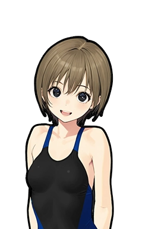
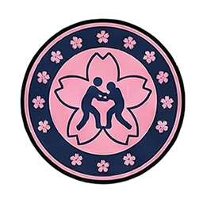
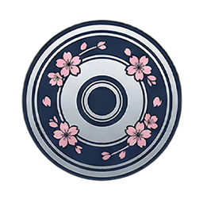

Ranking Restyle — B案
クリーム台帳 — 「机の上の業界名鑑」
ロスター・新聞と同じ「事務所の机の上で書類を眺めている」メタファーに寄せる案。外枠はOfficeダークフレーム、中身はクリーム紙。順位カラーは金インク/墨インクに置き換え、看板は朱印の赤。選手の切り抜き画像は台紙(集合写真パネル)の上に載せる。
← A案 Office標準B案（このページ）C案 格式チューニング →
🏆 団体ランキング
INDUSTRY STANDINGS
02 — Roster全団体ロースター
1
皇武館
看板高城95
主力月村92
王者朝倉 美鈴100
評価
842pt
2
ファイヤーガールズ
主力鈴木82

主力石川79

看板花村 桜子85
評価
708pt
3
ノヴァインパクト
看板大谷81
主力天城78
王者猪瀬 凛86
評価
654pt
4
なでしこプロレス

主力海老名71

看板桐野 葵76
評価
521pt
03 — 団体詳細団体プロフィール

皇武館
業界の頂点に座り続けている。朝倉 美鈴が幾度も防衛を重ね、団体の顔そのものになっている。上位だけで興行を成立させられる分厚さがある。
王者 / 看板
朝倉 美鈴 / OVR100
5防衛中。エースだけでなく2番手、3番手も強く、層の厚さで首位を守る。
- 上位層
- 厚
- 控え層
- 厚
主力層 8名（大枠含む）100 / 95 / 92 / 84 / 83 / 81 / 79台多数
95
92
84
83
81
79
78
上位8名が80台で並ぶ。どのカードでもメインを張れる。
評価842
基礎力681
平均OVR81
対戦PT+12
レガシー50
実績50

ファイヤーガールズ
首位を追い続ける挑戦者の位置。王座は不在で、花村 桜子が看板を一人で背負う。看板を軸に主力の輪郭がはっきりしている。
看板
花村 桜子 / OVR85
突出した怪物はいないが、主力が横に並ぶ。首位との差は最上位の怪物級と控え層の密度。
- 上位層
- 良
- 控え層
- 中
主力層 6名（大枠含む）85 / 82 / 79 / 77 / 74 / 73台多数
82
79
77
74
73
79
77
74
73
80前後に主力が集中。上積みは看板の一段上げ次第。
評価708
基礎力632
平均OVR76
対戦PT+8
レガシー28
実績28
ノヴァインパクト
中位から這い上がろうと牙を研ぐ。戴冠したばかりの猪瀬 凛が、まだ手探りで王座を温めている。突出した怪物はいないが、主力候補が広く並ぶ。
王者 / 看板
猪瀬 凛 / OVR86
王者は強い。ただし王者の後ろにもう一枚ほしい状態。
- 上位層
- 中
- 控え層
- 薄
主力層 5名（大枠含む）86 / 81 / 78 / 75 / 72台多数
81
78
75
72
王者依存が強く、厚みはまだ発展途上。
評価654
基礎力594
平均OVR73
対戦PT−4
レガシー30
実績18

なでしこプロレス
業界の最下層に沈んでいる。王座を欠いたまま、桐野 葵頼みで戦線をつなぐ。まだ発展途上で、伸びしろの賭け。
看板
桐野 葵 / OVR76
トップの看板はあるが、主力層は少ない。育成・補強の必要性が伝わる。
- 上位層
- 薄
- 控え層
- 少
主力層 4名（大枠含む）76 / 71 / 69 / 66台多数
71
69
66
顔の少なさで、上位との差が一目で出る。
評価521
基礎力498
平均OVR68
対戦PT+8
レガシー15
実績6
04 — Historyシーズン履歴
| シーズン | 順位 | 興行数 | 最高MQ | 収支 | 最終資金 | 人数 |
|---|---|---|---|---|---|---|
| 1年目 | 4位 | 38 | 82 | +1,240万 | 3,420万 | 14 |
| 2年目 | 3位 | 42 | 88 | +2,860万 | 6,280万 | 16 |
| 3年目（現在） | 2位 | 21 | 91 | +1,580万 | 7,860万 | 17 |